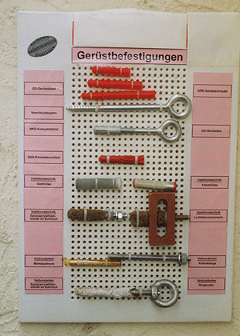

Als Befestigungsmittel sind Schrauben mit einem
Mindestdurchmesser von 12 mm zu verwenden. Die Länge der
Schrauben muss dem Aufbau der Fassade angepasst sein
(statische Tragfähigkeit berücksichtigen). Die Markierungen
am Schraubenschaft gewährleisten die exakte Einschraubtiefe
entsprechend der verwendeten Dübel.
Belastbarkeit des Ankergrundes beachten, notfalls Dübel prüfen